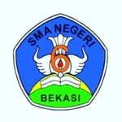

Assalamu'alaikum Warahmatullahi Wabarakatuh,
Puji syukur kita panjatkan ke hadirat Allah SWT atas segala rahmat dan karunia-Nya sehingga kita semua senantiasa diberikan kesehatan dan kesempatan untuk terus berkarya.
Selamat datang di Website Resmi SMAN 6 BEKASI. Website ini kami hadirkan sebagai media informasi, komunikasi, dan publikasi bagi seluruh warga sekolah, orang tua, alumni, serta masyarakat luas. Melalui website ini, kami berharap dapat memberikan kemudahan dalam mengakses informasi mengenai program, kegiatan, prestasi, dan berbagai layanan pendidikan yang kami selenggarakan.
Sebagai lembaga pendidikan, SMAN 6 BEKASI berkomitmen untuk mencetak generasi yang beriman, berakhlak mulia, berpengetahuan luas, kreatif, dan berdaya saing di era global. Kami terus berupaya meningkatkan mutu pendidikan melalui pengembangan kurikulum, peningkatan kualitas guru, serta sarana dan prasarana yang mendukung proses belajar mengajar.
Kami mengajak seluruh pihak, baik guru, tenaga kependidikan, siswa, orang tua, maupun masyarakat untuk bersama-sama berkolaborasi dalam mewujudkan visi dan misi sekolah. Dengan kerja sama yang baik, Insya Allah sekolah ini akan semakin maju dan memberikan kontribusi positif bagi pendidikan di Indonesia.
Akhir kata, semoga website ini dapat menjadi jendela informasi dan inspirasi bagi kita semua.
Wassalamu'alaikum Warahmatullahi Wabarakatuh.
BERAKHLAK MULIA, BERPRESTASI, KOMPETITIF DAN BERBUDAYA LINGKUNGAN